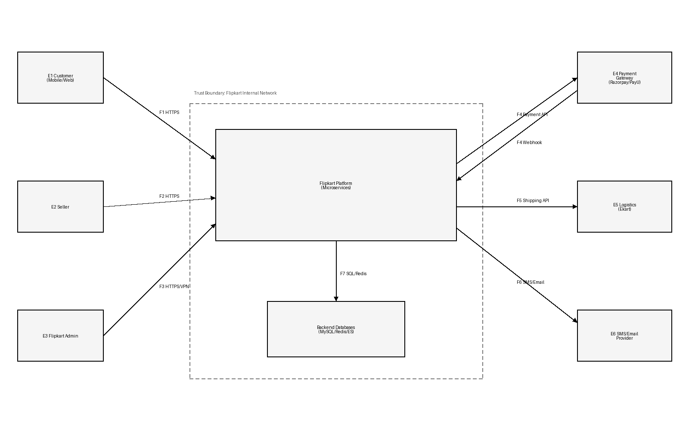
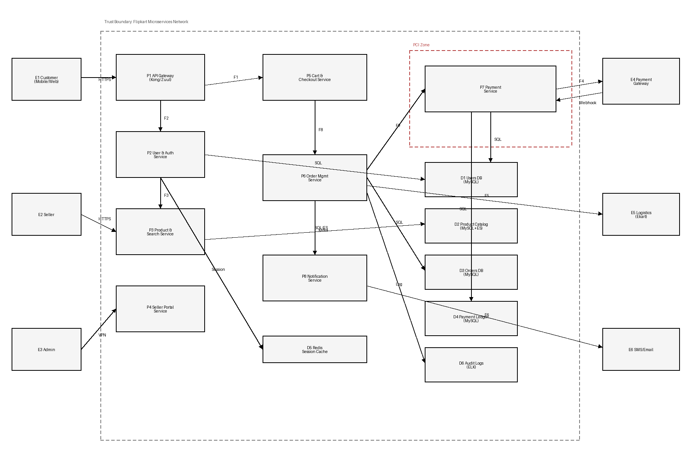

OWASP Threat Dragon Export - Flipkart Platform
Microservices-based e-commerce platform modeled on Flipkart's architecture:
API Gateway (Kong/Zuul), User & Auth Service (OTP login), Product & Search
(MySQL + Elasticsearch), Cart & Checkout, Order Management, Payment Service
(Razorpay/PayU in PCI zone), Seller Marketplace, Ekart Logistics, and
Notification Service.
Native Model File
The native Threat Dragon project file is
model_export.threatdragon.json.
DFD Level 0 - Flipkart Context Diagram
Shows external entities (Customer, Seller, Admin, Payment Gateway, Ekart Logistics,
SMS/Email Provider) interacting with the Flipkart Platform and backend databases.

DFD Level 1 - Internal Microservices
Decomposes the platform into: P1 API Gateway, P2 User & Auth Service,
P3 Product & Search Service, P4 Seller Portal, P5 Cart & Checkout,
P6 Order Management, P7 Payment Service (PCI zone), P8 Notification Service.
Data stores: D1 Users DB, D2 Product Catalog, D3 Orders DB, D4 Payment Ledger,
D5 Redis Session Cache, D6 Audit Logs.

STRIDE Table
The full STRIDE threat table (20 threats) is provided as
STRIDE_Table.csv.
Top 8 Prioritized Risks
- OTP brute-force account takeover – Automated OTP guessing on Flipkart's mobile login (4-6 digit OTP)
- IDOR on order/address endpoints – Sequential IDs allow cross-user data access (DPDP Act violation)
- Price/coupon tampering at checkout – Client-side manipulation of cart totals during Big Billion Days
- Razorpay/PayU webhook spoofing – Forged payment success callbacks cause unpaid order shipments
- Flash sale DDoS (Big Billion Days) – Bot/attacker traffic floods crash checkout at 10x normal load
- Mass user PII exposure – 400M+ user records (phone, address, Aadhaar) at risk of breach
- Fake seller registration and listing fraud – Fraudulent sellers with stolen KYC collect payments without shipping
- Admin account compromise – Phished admin credentials grant access to payouts, catalog, and user data